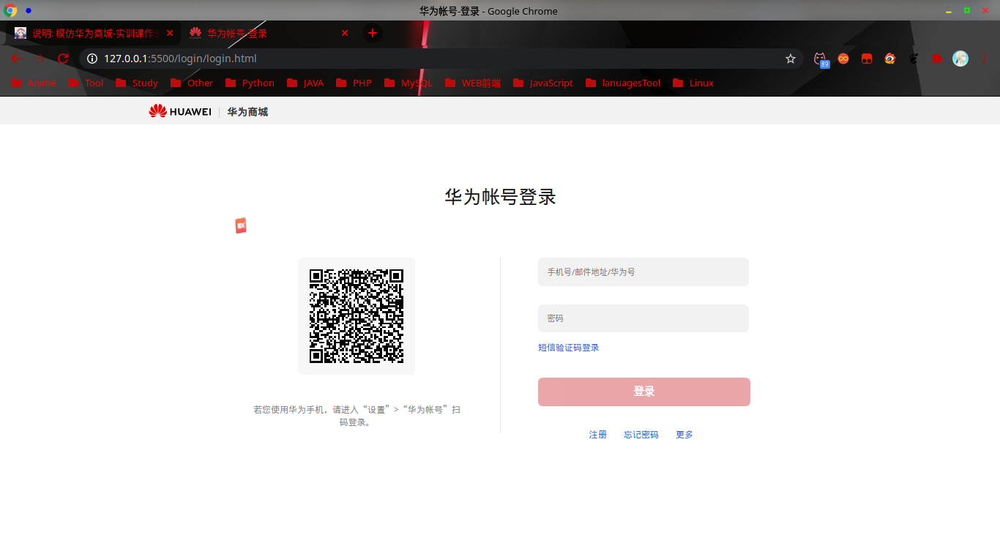
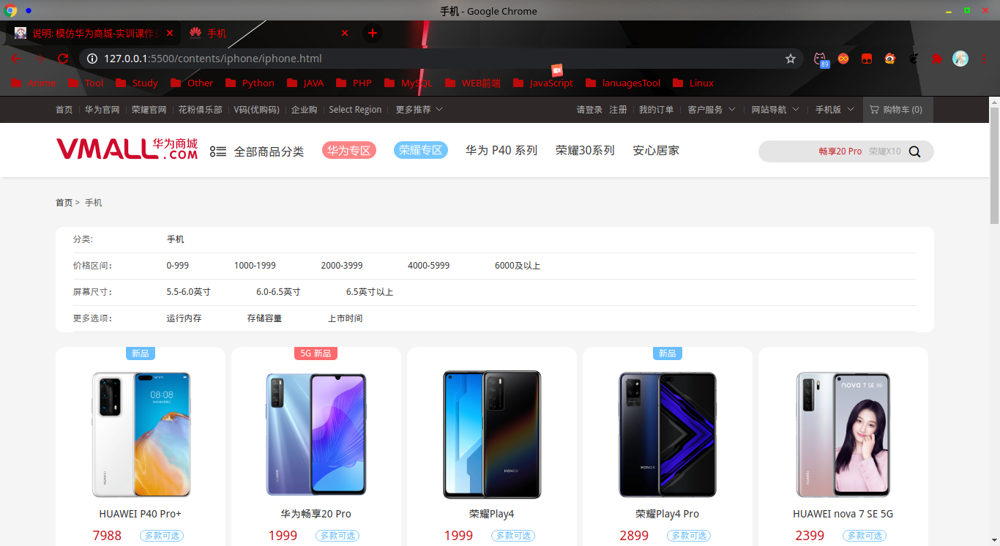
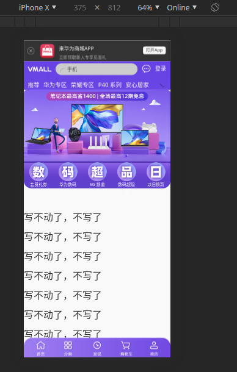

写了那些内容
第一个页面就是首页部分
基本上还原了原官网的所有特效，轮播图啊，鼠标悬浮显示二级导航啊等等...
第二个页面是 登录界面
第三个页面是 手机内容节目
这个页面没有从原官网上扒图片，用的是他的json数据，用jquery读取后直接映射到html文档里面的
所以就导致了一个问题
Access to XMLHttpRequest at 'file:///home/apecode/Documents/html/huawei/contents/date/phone1.json' from origin 'null' has been blocked by CORS policy: Cross origin requests are only supported for protocol schemes: http, data, chrome, chrome-extension, https.
报这个错，这个错的问题是：跨域请求出现问题，丢在服务器就可以了（类似于Tomcat这类）
第四个页面是 移动端页面
没写完，写不动了
实现了自适应
差不多就这些